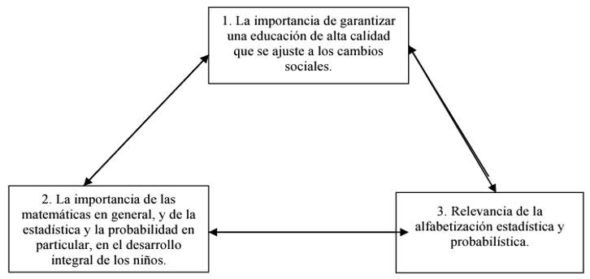
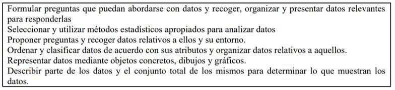
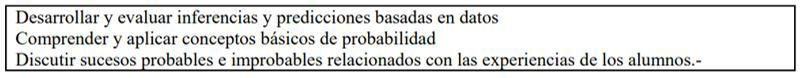
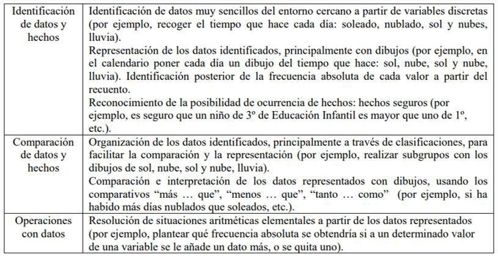
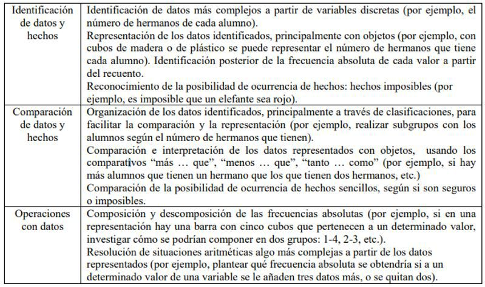
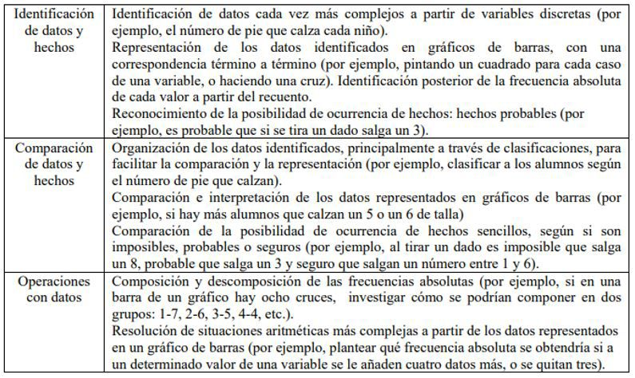

Introducción
La estadística es una rama de la ciencia matemática
y se define a grandes rasgos como “un sistema
o método usado en la recolección, organización,
análisis y descripción numérica de la información...
Se puede decir que la estadística estudia el
comportamiento de hechos o fenómenos de grupo.”
(Martínez Bencardino, 2012), debido a esto es que
es de suma importancia que desde el grado sexto se
comience a enseñar la estadística básica, esto con
el fin de que los niños se preparen para el nivel de
media académica puesto que es indispensable en este
nivel educativo.
Por otro lado también es fundamental para la
recolección, organización y análisis de datos ya
sean descriptivos o numéricas con el fin de la toma
de decisiones ya sean con fines económicos o
académicos.
La estadística juega un papel muy importante en
educación actual puesto que aparte de ser un requisito
indispensable en la educación media académica
también juega un papel esencial en las pruebas de
estado denominadas como pruebas ICFES saber 11, la
cual mide el nivel de conocimiento de los estudiantes
próximos a graduarse. Un gran porcentaje de la
prueba de matemáticas es de tipo estadístico y si no
se tiene un manejo correcto de ésta rama matemática,
se verá afectada la calificación.
Lamentablemente ésta asignatura no hace parte del
pensum académico desde los grados tempranos o
iniciales, ya que sólo se enseña por lo general desde
el 9º grado, porque al parecer no es considerada como
una ciencia tan importante y primordial en nuestro
sistema educativo, pero si la enseñaran o se incluyera
en el pensum desde los primeros grados escolares los
resultados se verían reflejados de manera positiva
en las pruebas saber aplicadas a los largo de la vida
escolar y en cada uno del os estudiantes en su vida
profesional.
La Estadística en Nuestra Sociedad
Esta rama de la matemática es crucial en nuestra
sociedad y la vemos aplicada en nuestra vida
cotidiana y profesional, así que como nos dice
(Ponteville, 2021).
“La estadística posee un papel primordial en el
desarrollo de la sociedad actual proporcionando
herramientas que permiten describir situaciones
de incertidumbre en análisis científicos, sociales
y económicos actuales. Analizar la variabilidad,
determinar relaciones entre variables, diseñar
estudios y experimentos y mejorar las predicciones
son algunos de los aspectos que la estadística tiene
en cuenta. La adquisición de ideas estadísticas es,
por lo tanto, un asunto de gran importancia para la
sociedad contemporánea. La importancia cada vez
mayor de la tecnología, de la ciencia y de los medios
de comunicación en las sociedades modernas ha
favorecido a su desarrollo en forma vertiginosa.”
Historia de la estadística
Como veremos a continuación, la Estadística siempre
ha estado presente en nuestra vida cotidiana, y se ha
demostrado a lo largo del tiempo su aplicabilidad
positiva, mejorando la calidad de vida de la sociedad.
A continuación me permito presentar a varios autores
reconocidos, especialistas en la materia:
“La estadística tiene sus orígenes en la administración
pública, brindando un servicio al estado o al gobierno.
Ha sido utilizada y aplicada en una amplísima
variedad de áreas: salud pública a través de la
epidemiología y la bioestadística, entre otras; análisis
económicos y sociales, como la tasa de desempleo y
la econometría. Todas estas áreas necesitaron de un
desarrollo cualitativo significativo de la estadística.
De esta forma, la estadística se encuentra en pleno
desarrollo respondiendo a dos vertientes: su utilidad
para el resto de las ciencias y su propio progreso y
crecimiento teórico, jugando la informática un papel
fundamental en su desarrollo.
Como reflejo de esta situación, en el caso de las
instituciones educativas de nivel superior muchas
tienen departamentos académicos de matemática y
estadística en forma paralela y la estadística se enseña
en departamentos tan variados como los de medicina
social, psicología, relaciones del trabajo, entre otros.
Teniendo en cuenta su naturaleza, la estadística puede
ser considerada no como una rama de la matemática,
sino como un área de conocimiento en estrecha
vinculación con ella que toma un status parecido
al que tienen, por ejemplo, las nuevas ciencias
relacionadas con la informática. Según sus enfoques,
se ha superpuesto con, por ejemplo, la teoría de la decisión poniendo el énfasis en la posibilidad de hacer
predicciones cada vez más acertadas y con las ciencias
de la información en el procesamiento de datos. Es
transversal a una extensa variedad de disciplinas,
desde el control de calidad hasta las ciencias sociales,
desde las ciencias de la salud hasta la física. Podemos
decir que el método estadístico es la matemática
social por antonomasia. (Bell, 1995). Es así como, la
estadística, durante el siglo XX, ha sido considerada
parte de la base del método científico y una estrategia
metodológica fundamental. “Además de su carácter
instrumental para otras disciplinas, se reconoce el
valor del desarrollo del razonamiento estadístico en
una sociedad caracterizada por la disponibilidad de
información y la necesidad de la toma de decisiones
en ambientes de incertidumbre” (Batanero, 2002).
Dado este carácter multifacético, pueden encontrarse
una variedad de definiciones y caracterizaciones para
la estadística, pero nos contentaremos con decir que la
estadística es la ciencia que estudia cuantitativamente
los fenómenos aleatorios. Los métodos estadísticos
y las conclusiones que provienen de ellos se deben
usar en todas las etapas de una investigación” según
(Ponteville, 2021).
Estadística Aplicada a la Educación.
La estadística es una herramienta fundamental
en la Educación porque brinda las herramientas
indispensables para que los estudiantes la apliquen
en su vida profesional y personal, mejorando su
desempeño laboral, personal y por ende su calidad de
vida.
Según ( León. , 2011) dos dice al respecto que: “La
estadística se ha convertido en una herramienta de
capital importancia, sus métodos y procedimientos
son de uso casi obligatorio en la gran mayoría de
las ramas del saber. Las ciencias sociales se valen
de ella para indagar, hasta donde el método de la
estadística lo permite, sobre las tendencias presente
y futura del hombre en su constante proceso de
cambio. El educador se puede valer de ella para
lograr una aproximación al conocimiento de la
realidad, especialmente para determinar la precisión
de sus observaciones y mediciones. Por otra parte,
el razonamiento estadístico constituye un medio útil
para desarrollar un aspecto importante de la capacidad
intelectual de una persona por lo que viene a formar
parte también de la formación humana integral.
La estadística, como toda ciencia, es un modo
de acercarnos al conocimiento de la realidad. Se
caracteriza por su rigurosidad matemática lo cual
requiere una presentación y comprensión de sus
términos y relaciones. Sin embargo, no se puede
perder de vista que el conocimiento de la realidad,
si se quiere evitar todo reduccionismo, no se puede
abordar con un mismo método y desde una misma
perspectiva; la riqueza y complejidad de la realidad
requiere ser estudiada desde múltiples ángulos y con
el método que mejor se adecua para ello, por eso
a pesar de la importancia de la matemática y de su
amplia aplicación no se puede reducir el conocimiento
a ella, ni se puede pretender que su método sea el
único válido. Por otra parte, debemos reconocer, que
la estadística, como todo lo cuantitativo, favorece, en
el individuo que la ejercita, la conformación de una
sana disciplina mental.”.
Incorporación de la Estadística y la Probabilidad
en Educación Infantil
Como lo define (Alsina, 2018) en su trabajo LA
ESTADÍSTICA Y LA PROBABILIDAD EN
EDUCACIÓN INFANTIL: UN ITINERARIO DE
ENSEÑANZA.
“…en una sociedad altamente tecnificada como
la actual es necesario que los ciudadanos tengan
recursos a su alcance para conocer la realidad,
representarla e interpretarla críticamente, con el
objeto de poder transformarla o, simplemente,
predecir su futuro. Con la incorporación de la
estadística y la probabilidad en educación infantil se
intenta promover que los alumnos aprendan desde
pequeños conocimientos que les sirvan de base para
la recogida, descripción e interpretación de datos.
En definitiva, se trata de ofrecerles herramientas que
les ayuden a responder preguntas cuyas respuestas no
son inmediatamente obvias, a la vez que les faciliten
la toma de decisiones en situaciones en las que la
incertidumbre es relevante. Todo ello, para que
progresivamente sean ciudadanos bien informados
y consumidores inteligentes, es decir, personas
con una adecuada alfabetización estadística y
probabilística…”

Ilustración 1. Argumentos entorno a la incorporación de la estadística y la probabilidad en
educación infantil.
Importancia de las Matemáticas en General, Y de
la Estadística y la Probabilidad en Particular, en
el Desarrollo Integral de Los Niños.
Cabe resaltar las siguientes opiniones de expertos en
ésta área:
“…se desprende que el conocimiento matemático
no es importante por sí mismo, sino por su
importante papel en la sociedad actual, tecnológica
y científicamente avanzada (Goñi, 2008). Desde
esta perspectiva, y tomando como referencia
las orientaciones contemporáneas en materia de
educación matemática, es imprescindible favorecer
que todos los alumnos aprendan matemáticas desde
las primeras edades, ya que nunca hasta ahora había
sido mayor la necesidad de entender y ser capaz de
usar las matemáticas en la vida diaria y en el trabajo.
No se trata, sin embargo, de formar a matemáticos,
sino de formar a personas que desde la etapa de
educación infantil aprendan a usar progresivamente
las matemáticas en una variedad de contextos en los
que estos conocimientos son necesarios, además del
escolar.
Las matemáticas que aprenden y usan los niños
durante las primeras edades son matemáticas intuitivas, y las aprenden en el marco de experiencias
informales (NCTM, 2003). Baroody (1987) acuña
el término “matemáticas informales” precisamente
para referirse a estas prácticas informales. Este autor
pone de manifiesto que los niños de las primeras
edades recopilan, a menudo, una gran riqueza de
conocimientos sobre temas que les interesan, y a
partir de estos intereses y actividades cotidianas es
como van desarrollando su pensamiento matemático.
Entre estos intereses están la recolección de datos, su
representación e interpretación, como se ha puesto
de manifiesto en diversos estudios preliminares
(Alsina, 2006, 2012; Dalmau y Alsina, 2015). Estos
datos revelan que los niños de las primeras edades
tienen conocimientos informales sobre estadística y
probabilidad, que son el eslabón imprescindible para
que posteriormente puedan aprender conocimientos
estocásticos más formales en el contexto de una
enseñanza reglada. En educación matemática, pues, la
conexión más importante en los primeros aprendizajes
matemáticos es el existente entre las matemáticas
intuitivas, informales, que los niños aprenden a través
de sus experiencias, y las matemáticas más formales.
Estos conocimientos son lo que van a permitir que
progresivamente sean ciudadanos matemáticamente
alfabetizados.” (Alsina, 2018)

Ilustración 2. Contenidos de estadística de 3 a 8 años (NCTM, 2003)

Ilustración 3. Contenidos de probabilidad de 3 a 8 años (NCTM, 2003)

Ilustración 4 Contenidos de estadística y probabilidad para niños de 3-4 años (Alsina, 2018)

Ilustración 5 Contenidos de estadística y probabilidad para niños de 4-5 años (Alsina, 2018)

Ilustración 6 Contenidos de estadística y probabilidad para niños de 5-6 años (Alsina, 2018)
Importancia de la Estadística en la Educación
Inicial
¿Estadística Para Qué?
“El porqué de la estadística en el área educativa
inicial es explicado en este artículo, con lo que puede
alcanzar mejores resultados al educar. Para planificar
y obtener resultados acertados hay que disponer de
estadísticas confiables y oportunas. En el ambiente
educativo, normalmente se escucha a profesores/as, a
Directores/as de centros, de Distritos, de Direcciones
Regionales, etc., hablar del Plan de Clases, de
Programación de Actividades, en fin, se les escucha
hablar de planificar las cuestiones educativas propias
de su desempeño. Estos planes y programas oscilan
en torno a un grupo de estudiantes, a un contenido
educativo, a un centro docente, una comunidad
educativa o una sociedad de padres y amigos de la
escuela, entre otras. Cuando se habla de planificación
ésta puede ser considerada a nivel micro o a nivel
macro, todo depende de si se refiere a una parte
pequeña o una parte grande, si es una unidad de
un conglomerado o es el conglomerado completo.
No importa si se habla de una cosa o de la otra, en
cualquier caso, se está hablando de planificación e
ineludiblemente al hablar de ésta, se está hablando
de Estadística. Las estadísticas son necesarias tanto
para los maestros/as como los directores/as de los
centros, de distritos, de las regionales y los diversos
funcionarios de los estamentos del Sistema Educativo,
es decir, todos/as los actores que interactúan en la
conducción de la cuestión educativa. La estadística
es la base de la planificación. Para planificar y
obtener resultados acertados hay que disponer de
estadísticas confíales y oportunas. Confiable significa
que respondan a la realidad y que sean de cobertura
total y lo de la oportunidad guarda referencia con
el momento; un dato estadístico deja de ser bueno
cuando pierde oportunidad, es decir si no se tiene en
el momento que se necesita. El profesor/a, el director
del centro y de los estamentos de dirección, no sólo
deben desempeñarse con estadísticas educativas,
es decir las que se producen al interior del centro
educativo, por ejemplo, la cantidad de estudiantes de
la escuela, de una tanda o de grado; o en qué rango
de edad se encuentran, sus calificaciones; número
de aulas, cuántos maestros/as hay en la escuela,
por género, años en servicio, etc. Pero además
deben manejar otras estadísticas, como las que se
refieran a la salud de los estudiantes, cuáles son las enfermedades más frecuentes que padecen, las
vacunas que les han sido administradas. Estadísticas
sociales, como lugar donde viven, con quien viven y
estadísticas demográficas referidas a la población de
la comunidad y su estructura por sexo y edad, número
de hermanos/as, niños/as en edad escolar, etc. Lo
que se quiere significar es que las estadísticas son la
base de la planificación para el logro de estrategias
y cumplimiento de metas y objetivos, en todo lo que
tiene que ver con el quehacer educativo. Si se crea la
cultura de utilizar los recursos estadísticos que son una
manifestación del resultado de desarrollo educativo
se podría obtener mejores productos en el proceso de
enseñanza-aprendizaje. Las estadísticas de educación
son el resultado de procesos organizados y sistemáticos
mediante los cuales se capta la información referente
a los alumnos, personal docente, escuelas y recursos
destinados a la educación del país. El objetivo
central de las estadísticas es obtener información
descriptiva de las condiciones en que se desarrolla el
quehacer educativo en diferentes ciclos escolares y
educativos, tanto en el sector público como privado.
Las estadísticas educativas iniciaron en nuestro País
desde principios de siglo, sin embargo, fue hasta 1940
que se formalizo su generación, organizándose dentro
de la Dirección General de Estadísticas, cuando está
aún se encontraba adscrita a la Secretaria de Industria
y Comercio.” (toaz, 2021)
Importancia
“A través del recuento sistematizado de alumnos,
personal docente, escuelas y recursos destinados a la
educación en los diferentes servicios y modalidades
educativas, las estadísticas permiten identificar como
se encuentra el Sistema Educativo Nacional en términos
de: capacidad para proveer servicios educativos a la
población (oferta educativa). Acceso a los servicios
educativos (demanda educativa). Gasto en el sector
educativo (capacidad instalada). Recursos humanos,
materiales y financieros destinados a la educación.
Resultados educativos en términos de rendimiento
de los estudiantes y eficiencia del sistema como tal.
La estadística en la educación permite determinar
la cantidad de alumnos en primaria, secundaria y
nivel terciario o universitario. Determina: • que
cantidad de alumnos ha finalizado cada periodo antes
mencionado, • indican el nivel de conocimientos
• identifica la cantidad de alumnos que asisten a
establecimientos privados y oficiales, • reflejan
el número de repetidores en cada establecimiento público, oficial y privado. • Cantidad de alumnos que
continúan en secundaria • Cantidad de alumnos que se
reciben en nivel terciario o universitario • Identifican
que asignaturas presentan más dificultades para los
niños y jóvenes. La creciente demanda en el uso de
métodos estadísticos cada vez más sofisticados ha
creado la urgente necesidad de establecer un programa
de entrenamiento en estadística al más alto nivel para
el progreso de nuestro País. Aun cuando existe un
número de programas de doctorado en Matemáticas,
la necesidad de un programa separado en estadística
es patente, de hecho, los requerimientos de cursos
y más específicamente el foco intelectual, son muy
diferentes. En la captación de las estadísticas de
educación, se considera como unidad de observación
al plantel educativo, del cual se obtiene información
sobre los alumnos, el personal, los recursos destinados
a la educación y del plantel mismo. Los alumnos que se
consideran son todos los matriculados durante el ciclo
escolar en cuestión. El personal docente que forma
parte de las estadísticas es aquel que se encontraba
en servicio al momento de captar la información.
En cuanto a las escuelas, se toman en consideración
aquellos planteles que estaban funcionando durante el
ciclo escolar de referencia. Por último, se cuantifican
todos los recursos disponibles en las escuelas,
independientemente de su origen, el cual puede ser
público o privado. La SEP genera la estadística de
alumnos, personal docente, escuelas y recursos
destinados a la educación desde el nivel preescolar
hasta la educación normal, además de que considera
otros servicios educativos que también son parte del
sistema formación para el trabajo. La SEP recopila
y procesa la información estadística educativa por
medio de cuestionarios denominados formatos 911
en cuatro etapas, distribución, llenado y recolección,
recolección extemporánea, y procesamiento y análisis
de datos. Estas etapas se realizan de manera íntegra
tanto al inicio como al fin de cursos. El fenómeno
educativo comprende una gama muy amplia de
factores que se interrelacionan para generar el
aprendizaje en los alumnos. Entre estos están los
agentes del proceso educativo: alumnos, personal
docente, persona administrativa y los diseñadores de
planes y programas entre otros.” (toaz, 2021).
Conclusión
En consecuencia, según este estudio se plantea
la necesidad de que la estadística sea una materia
obligatoria en los primeros años del ciclo escolar de bachillerato; con lo cual, se mejorará los resultados
en el área de matemáticas en las pruebas de estado
saber 11. Así como, la calidad de los resultados
académicos en la etapa de pregrado. Es así, que se
invita a los diferentes planes de estudio de colegiatura
y pregrado a incluir de manera transversal y aplicada
la materia de estadística.
Referencias
- León. , W. (septiembre de 2011). RELACIÓN CON
EDUCACIÓN ESTADÍSTICA APLICADA
A LA EDUCACIÓN. RELACIÓN CON
EDUCACIÓN OTRAS MATERIAS: Matemática
y Razonamiento Lógico (I), Pensamiento Lógico
Matemático (II y IV).
chrome-extension://efaidnbmnnnibpcajpcglclefindmkaj/viewer.html?pdfurl=https%3A%2F%2Fuma.edu.la%2520Educaci%25C3%25B3n%252011-12.pdf&clen=99269&chunk=true
- Alsina, Á. (2018). La estadística y la probabilidad en
educación infantil: un itinerario de enseñanza. La
estadística y la probabilidad en educación infantil:
un itinerario de enseñanza. chrome-extension://
efaidnbmnnnibpcajpcglclefindmkaj/viewer.
html?pdfurl=https%3A%2F%2Fwww.ugr.
F~fqm126%2Fciveest%2Fponencias%2Falsina.
pdf&clen=584138&chunk=true.
- Ayala, G. (30 de diciembre de 2019). Estadística
Básica. Obtenido de https://www.uv.es/ayala/docencia/nmr/nmr13.pdf
- Martínez Bencardino, C. (2012). Estadística y
muestreo. Décima tercera edición Estadística y
muestreo. Bogotá, colombia: ECOE ediciones
Ltda.
- Ponteville, C. (3 de diciembre de 2021). ¿PARA
QUÉ ENSEÑAMOS ESTADÍSTICA? ¿PARA
QUÉ ENSEÑAMOS ESTADÍSTICA?
buenos aires, buenos aires, argentina: Instituto
Superior del Profesorado “Dr. Joaquín V.
González”. Obtenido de chrome-extension://
efaidnbmnnnibpcajpcglclefindmkaj/viewer.
html?pdfurl=https%3A%2F%2Fcore.
ac.uk%2Fdownload%2Fpdf%2F33251013.
pdf&clen=148090&chunk=true
- toaz. (diciembre de 2021). toaz. Obtenido de Importancia de la Estadística en la Educación
Inicial: https://toaz.info/doc-viewer
- Edo, M. (2002). Jocs, interacció i construcció
de coneixements matemàtics. Tesis doctoral.
Bellaterra: Universitat Autònoma de Barcelona.
Edo, M. y
- Deulofeu, J. (2006). Investigación sobre juegos,
interacción y construcción de conocimientos
matemáticos. Enseñanza de las Ciencias, 24(2),
257-268.
- Everitt, B. S. (1999). Chance rules: An informal
guide to probability, risk, and statistics. Nueva
York: Copemicus/Springer-Verlag. Freudenthal,
H. (1991).
- Revisiting mathematics education. Dordrectht:
Kluwer. Frye, D., Baroody, A. J., Burchinal, M.,
Carver, S. M., Jordan, N. C., y McDowell, J.
(2013).
- Teaching math to young children: A practice guide
(NCEE 2014-4005). Washington, DC: National
Center for Education, Evaluation and Regional
Assistance (NCEE. Disponible en: http://whatworks.ed.gov Gal, I.
(2002).
- Adults’ statistical literacy: Meanings, components,
responsibilities. International Statistical Review,
70(1), 1-25. Gal, I. (2005)
- Towards ‘probability literacy’ for all citizens. En
G. Jones (Ed.), Exploring probability in school:
Challenges for teaching and learning (pp. 43-71).
Nueva York: Springer. Gal, I. (2012).
- Developing probability literacy: needs and
pressures stemming from frameworks of adult
competencies and mathematics curricula. En S. J.
Cho (Ed.), Proceedings of the 12th International
Congress on Mathematical Education (pp. 1-7).
Disponible en: http://www.icme12.org/upload/upfile2/tsg/2088.pdf
Godino, J., Batanero, C. y
Cañizares, M.J. (1987)
- Azar y probabilidad. Fundamentos teóricos y
propuestas curriculares. Madrid: Editorial
Síntesis. Godino, J. D., Batanero, C., Rivas, H. y
Arteaga, P. (2013).
- Componentes e indicadores de idoneidad de programas
de formación de profesores en didáctica de las
matemáticas. Revemat, 8(1), 46-74. Goñi, J. Mª.
(2008). 3 2 -2 ideas clave
- El desarrollo de la competencia matemática.
Barcelona: Graó. Jones, G. A. (Ed.) (2005).
Exploring probability in school. Challenges for
teaching and Learning. Nueva York: Springer.
NCTM (2003).
- Principios y estándares para la educación matemática.
Sevilla: Thales. Nunes, T., Bryant, P., Evans, D.,
Gottardis, L., y Terlektsi, M-E. (2015).
- Teaching mathematical reasoning: Probability and
problem solving in primary school. Londres:
University of Oxford. Olmos, G. y Alsina, Á.
(2010).
- El uso de cuadernos de actividades para aprender
matemáticas en educación infantil. Aula de
Infantil, 53, 38-41. Ministerio de Educación y
Ciencia (MEC) (2007). ORDEN ECI/3960/2007,
de 19 de diciembre, por la que se establece el
currículo y se regula la ordenación de la educación
infantil. BOE, 5, 1016-1036. Reeuvijk, M.V.
(1997).
- Las matemáticas en la vida cotidiana y la vida
cotidiana en las matemáticas. UNO, 12, 9-16.
Rychen, D.S. y Salganik, L.H. (2004).
- Definir y seleccionar las competencias fundamentales
para la vida. México: Fondo de Cultura Económica.
UNESCO (1998).
- Declaración mundial sobre la educación superior
en el siglo XXI: visión y acción. Disponible
en: http://www.unesco.org/education/educprog/wche/declaration_spa.htm

 Licenciatura en Matemáticas,
Universidad Francisco de Paula Santander, Cúcuta, Colombia.
Licenciatura en Matemáticas,
Universidad Francisco de Paula Santander, Cúcuta, Colombia.